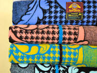

BASOTHO BLANKET
The famous Basotho blanket, symbol of pride and identity. Learn more
The famous Basotho blanket, symbol of pride and identity. Learn more
The iconic Mokorotlo hat, worn during ceremonies. Learn more
Traditional Seshoeshoe attire worn at cultural celebrations. Learn more
Traditional Basotho hat, usually worn with cultural attire. Learn more

Traditional Basotho blanket made from animal hide,specifically cowhide. Learn more
Traditional Basotho women's dress,often made from seshoeshoe fabric. Learn more
A traditional cloth or wrap worn over the shoulders or chest. Learn more
Traditonal Basotho doll, often handmade and rich in cultural symbolism. Learn more
Traditional Seshoeshoe attire worn at cultural celebrations. Learn more
Traditional Seshoeshoe attire worn at cultural celebrations. Learn more
Traditional Seshoeshoe attire worn at cultural celebrations. Learn more
Traditional Seshoeshoe attire worn at cultural celebrations. Learn more
Traditional Seshoeshoe attire worn at cultural celebrations. Learn more
The most iconic and prestigious Basotho traditional blanket. Learn more
Traditional Basotho footwear,usually made from animal hide. Learn more

Traditional apron-like cloth worn by men,often tied around the waist. Learn more
Traditional Seshoeshoe attire worn at cultural celebrations. Learn more
A headwrap worn by Basotho women. Learn more
Traditional ankle ornaments, usually worn by Basotho dancers or initiates. Learn more
A covering made from animal skin especially for kings. Learn more
A decorative woolen shawl or scarf worn over the shoulder . Learn more
Traditional Basotho footwear,typically made from recycled materials. Learn more

A modern Basotho blanket design known by yellow & black color. Learn more
Basotho blanket designed by FAMO music producers. Learn more
A Basotho blanket with flame-like pattern. Learn more
A mat made of woven reeds or grass. Learn more
Traditional Seshoeshoe attire worn at cultural celebrations. Learn more
Traditional Seshoeshoe attire worn at cultural celebrations. Learn more
Traditional Seshoeshoe attire worn at cultural celebrations. Learn more
Traditional Seshoeshoe attire worn at cultural celebrations. Learn more
Traditional Seshoeshoe attire worn at cultural celebrations. Learn more
Traditional Seshoeshoe attire worn at cultural celebrations. Learn more
Traditional Seshoeshoe attire worn at cultural celebrations. Learn more
Traditional Seshoeshoe attire worn at cultural celebrations. Learn more
Traditional blanket made from cow hide, it usually worn at initiation ceremonies. Learn more